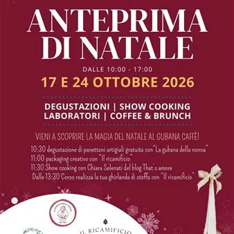

sab 24 ott · dalle 10:00
Anteprima di Natale - Degustazioni, show cooking e laboratori nelle Valli del Natisone
Via Algida, 63 - San Pietro al Natisone Sabato 24 ottobre 2026, dalle ore 10:00 alle ore 17:00, dedicato a degustazioni, show cooking, laboratori creativi e idee regalo, insieme a realtà del territorio che amiamo: Il Ricamificio di Forni di Sopra, Chiara Selenati del blog…
 Indicazioni
Indicazioni
- Costi e prenotazioni
- Costo non indicato · Prenotazione non indicata
- Programma
- Programma da verificare. Apri la fonte ufficiale per orari e possibili aggiornamenti.
- In caso di maltempo
- Nessuna indicazione specifica pubblicata.
- Note
- Acquisito automaticamente dalla fonte.
L’EVENTO
Descrizione completa
Il Natale arriva in anticipo al Gubana Caffè! Due sabati dedicati a degustazioni, show cooking, laboratori creativi e idee regalo, insieme a realtà del territorio che amiamo: Il Ricamificio di Forni di Sopra, Chiara Selenati del blog “That’s Amore!” e Borgo Garzolini. Vieni a scoprire la magia del Natale in un posto che sa di casa, tra caffè, brunch e tante cose buone e fatte a mano. IL PROGRAMMA
10:30 | Degustazione di panettoni artigianali
Il Natale si avvicina e noi iniziamo ad assaggiarlo: profumi, consistenze e sapori dei nostri panettoni, prima che arrivino le feste.
Partecipazione gratuita, solo 20 posti.
Prenotazione obbligatoria via WhatsApp al 0432 727234.
11:00 | Packaging creativo con Il Ricamificio
Un regalo può essere speciale anche prima di essere aperto.
Molli ci mostra come trasformare un semplice canovaccio in un’idea regalo originale: un piccolo laboratorio dimostrativo per scoprire un modo nuovo e sostenibile di confezionare i regali di Natale.
11:30| Show cooking con Chiara Selenati di “That’s Amore!”
E se la gubana diventasse protagonista di una nuova ricetta? Chiara Selenati ci accompagna nella preparazione del Gubanisù, insieme a Elisa de La Gubana della Nonna.
Un incontro tra tradizione, creatività e… naturalmente, gubana.
Dalle 13:30 alle 17:00 | Realizza la tua ghirlanda di stoffa Insieme a Molli de Il Ricamificio potrai creare la tua ghirlanda autunnale da appendere sulla porta, fatta con gli “sblecs”, i ritagli di stoffa colorata. Puoi iniziare il laboratorio dalle 13:30 alle 15:00.
38 € a persona, materiale e merenda inclusi.
Prenotazione obbligatoria via WhatsApp al 0433 886641. REGALI DI NATALE PER AZIENDE E PRIVATI
Durante l’evento potrai vedere in anteprima le nostre box regalo, nate dalla collaborazione tra La Gubana della Nonna e Il Ricamificio: gubana artigianale e canovaccio ricamato, personalizzabili nei prodotti, nelle quantità e nei formati. Per le aziende: richiedi il catalogo “Regali B2B” scrivendo a info@gubanadellanonna.com . Per tutta la giornata il Gubana Caffè resta aperto per colazioni, caffè e proposte salate come French toast, uova, bacon e toast. Ti aspettiamo, il 17 o il 24 ottobre.. o anche entrambi!
IL PROGRAMMA
Programma e orari
Appuntamenti raccolti dalle fonti elencate. Dove manca un orario, non è ancora disponibile in questa scheda.
Programma pubblicato
- 10:30 | Degustazione di panettoni artigianali
- 11:00 | Packaging creativo con Il Ricamificio
- 11:30| Show cooking con Chiara Selenati di “That’s Amore!”
INFORMAZIONI UTILI
Prima di partire
- Controllare la fonte prima di partire.
ORGANIZZAZIONE